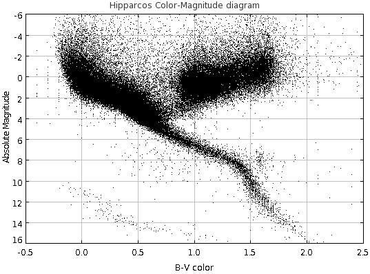

Getting ready for TOPCAT TOPCAT is a JAVA utility developed under the auspices of the international "Virtual Observatory" concept which enables the manipulation, display and analysis of datasets, specifically astronomical ones. Please refer to the above link for detailed information and downloading instructions. Note that TOPCAT can be installed on Windows, MacOS and Linux platoforms that are also Java-enabled. Here, I assume that you have already installed TOPCAT successfully.
Getting datasets ready for TOPCAT Under normal circumstances, I generate files in "CSV" format --- "Comma Separated Variables" --- because that format is simple, well-defined and platform-independent. It is definitely the preferred format. However, it seems that Internet Explorer, which some of you may use as your browser, corrupts the pristine format of these files when it downloads them (totally defeating the whole purpose of having machine-independent files). So, unfortunately, there are different instructions depending on the browser you use.
- Firefox (and other users):
Please chose the "CSV" file to download.- Click on the "CSV" file you want to download
- After it loads, click on "File" (upper left) and then "Save Page as"
- Make sure the file is to be saved in the proper directory; I suggest you leave the name as I have set it. Note that the file type (lower right) should read "plain text document"
- Click "save".
- Check that the file exists in the right directory. If it's there, you are ready to load it into TOPCAT.
- Internet explorer users:
Because of the issues with Internet Explorer, you have to select the "ASCII" file version, not the CSV. And then, we have to fool Microsoft a bit....- Click on the "ASCII" file you want to download
- After it loads, click on "File" and then "Save Page as". Save it as a "plain text document" and be sure to specify that its name ends in ".txt".
- Make sure the file is to be saved in the proper directory, and that it is a "text document".
- Open the file with "WordPad". To do this, you may need to point at the file and right click to that a menu appears; selected "Open with" and then to the right "WordPad".
- Once the file loads, then click on the menu at the top left, then on "Save as" and "Plain text document". Be sure the "Save as type" is set to "Text Document".
- Click "save".
- Check that the file exists in the right directory. If it's there, (we hope that) you are ready to load it into TOPCAT.
A simple example of using TOPCAT
|
Below are links to two files containing the different versions (CSV and ASVII) of
a catalog of 38,000 stars with measured apparent
magnitudes at both B and V band, parallaxes and radial velocities from the
Hipparcos satellite catalog which I downloaded from
Eric Mamajek's
page at URochester. We can use these to make a simple color-magnitude diagram.
|
 |
 Notice that it bears some resemblance to the plot we wanted to make (shown above on the right), but (a)
the data points appear are denoted by red symbols not black ones, (b) it seems to have the Y axis scale flipped and (c) the range
of X and Y values is not the same. We need to fix those things.
Notice that it bears some resemblance to the plot we wanted to make (shown above on the right), but (a)
the data points appear are denoted by red symbols not black ones, (b) it seems to have the Y axis scale flipped and (c) the range
of X and Y values is not the same. We need to fix those things.